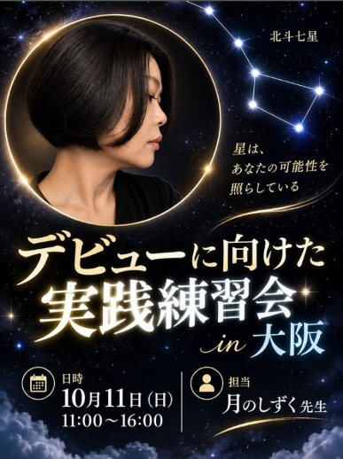
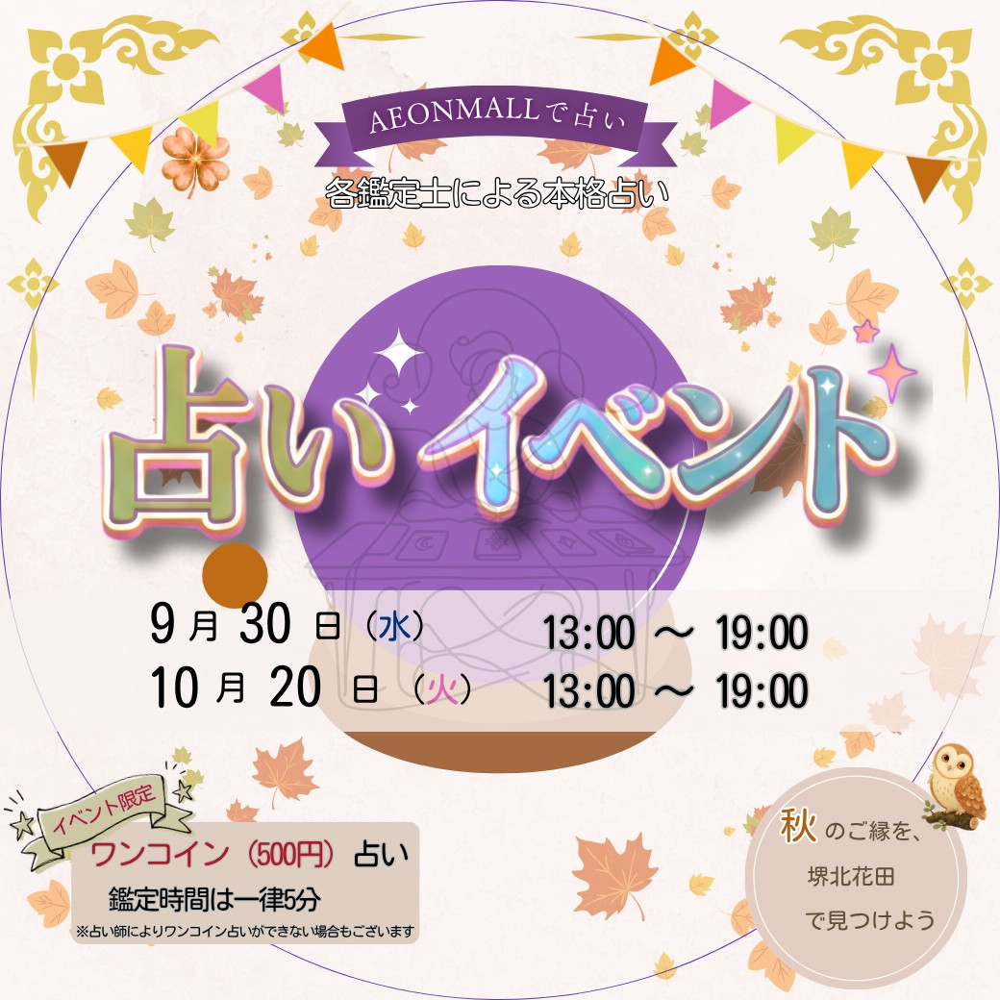
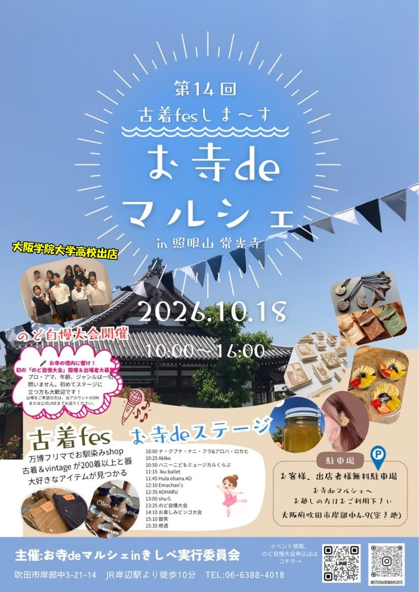
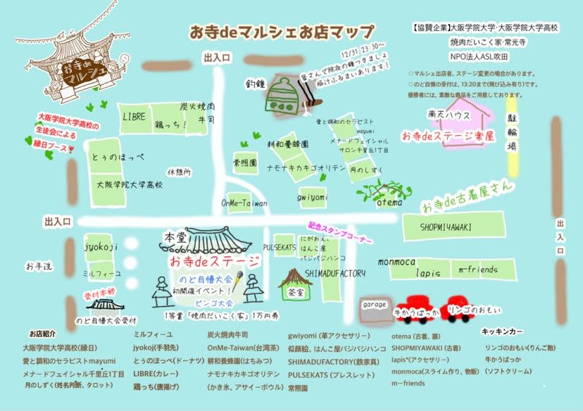
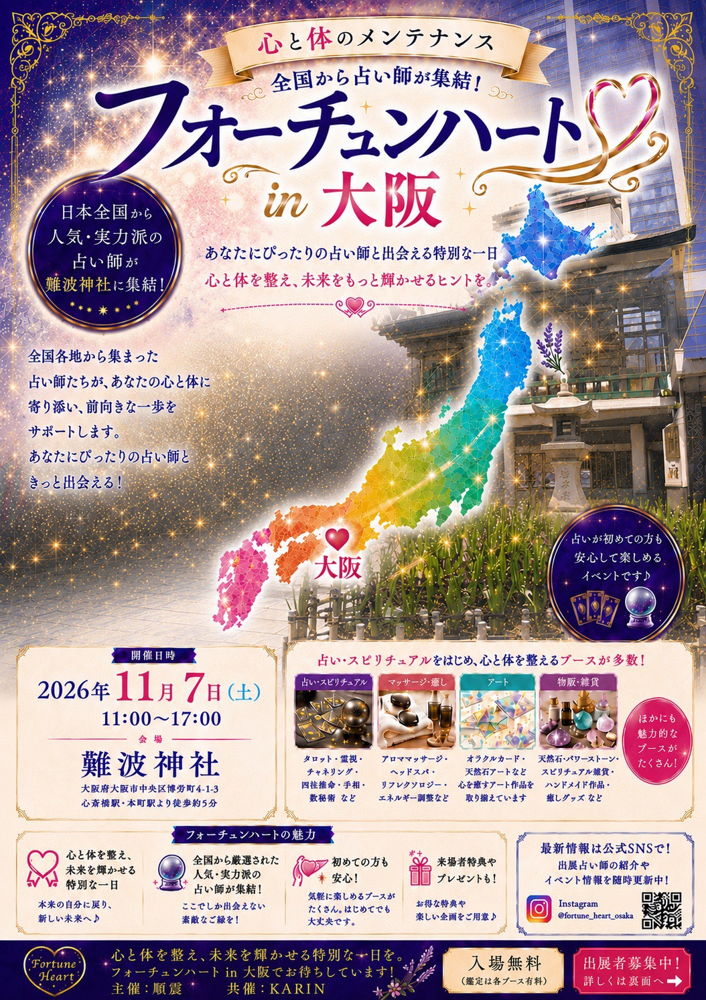

Events
「いつか占い師として活動したい」「学んだけれど、自信がなくて一歩踏み出せない」
そんな方のための実践練習会です。実際に鑑定を行いながら、伝え方や流れ、相談者との向き合い方を学びます。
知識を学ぶだけでなく、"実際に使える力"を身につける一日。
占い師デビューを目指している方、鑑定経験を増やしたい方、人に伝える練習をしたい方、自信をつけたい方におすすめです。

イベント出展情報です。
イベント詳細・チケット購入は各公式サイトをご確認ください。
各鑑定士による本格占いイベントに出店します。
今回はタロットのワンコイン占い（500円・5分）が目玉です。
紫微斗数とタロットを合わせた30分メニューもお得にご案内しています。

当日は、東洋のホロスコープとも呼ばれる紫微斗数を中心に、奇門遁甲・タロット・数秘術をご用意します。
紫微斗数では、生年月日・出生時間・出生地から命盤を作成し、生まれ持った性質や考え方の傾向を読み解きます。
「自分のことを少し整理したい」「今の流れや進む方向を知りたい」そんな方は、どうぞお気軽にお立ち寄りください。


全国から人気・実力派の占い師が難波神社に集結するイベントに出店します。
占いが初めての方も安心して楽しめる雰囲気なので、お気軽にお立ち寄りください。
